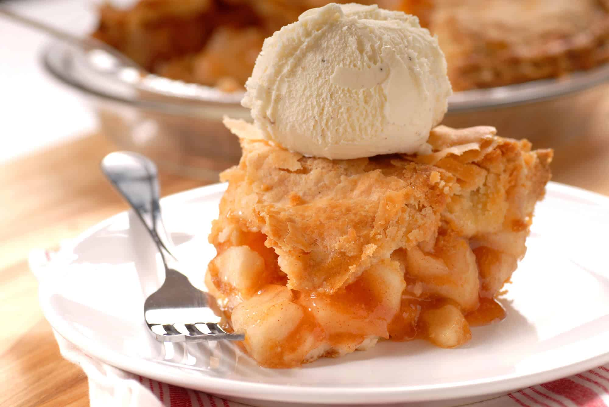

The author of recipe is Anna Markow, the original recipe can be found on seriouseats.com
This pie has a filling that's sweet, bitter, and just a little savory, a crust that shows off technical skill and a love for good old butter, and something classic yet subtly original melting all over everything.
You don't have to have professional training to get freakishly flaky pie dough, just a freezer and the ability to pay attention for five minutes. If you don't have a stand mixer, use a pastry cutter to cut in the butter. Do not use a food processor: there is no control over the speed of the blades and it's too easy for an inexperienced piesmith to take things too far.
Cut the butter into 1/2 inch pieces and freeze. Combine flour, sugar, and salt in bowl of stand mixer and mix for 5 seconds on lowest speed to incorporate. Add butter and continue mixing on lowest speed until butter is broken into roughly pea-sized pieces. Gradually add cold water until dough just comes together. pat into tightly-packed disc, wrap and chill for at least 2 hours.
Peel, core and quarter apples. Cut quarters into roughly 1/2 inch thick slices. Place a large heavy-bottomed stockpot (or a rondeau if you happen to have one) on the stove and add sugar. Cook over high heat, stirring occasionally at first and constantly once sugar begins to caramelize. Don't worry about chunks of unmelted or crystallized sugar. Continue to cook until caramel is dark amber, almost the color of maple syrup. Reduce heat to medium and carefully add butter, stirring it in (it will foam up a little, be careful). Carefully add liquor from a safe distance (caramel will foam and sputter more). Carefully add about 2/3 of apple slices, being careful not to splash caramel. Stir to coat with caramel. Turn heat back to high and cook, stirring often, until apples are just slightly beginning to soften, about 5 minutes. Add remaining apple slices, cinnamon, pepper and salt and continue to cook, stirring constantly, until all apples are cooked to some degree, about 5-10 minutes. Remove from heat and strain apples into medium bowl to cool. Return pot with caramel liquid to medium heat and allow to reduce for about 5 minutes. Remove from heat, allow to cool slightly and scrape into a heat-proof measuring cup or ramekin, it should yield about 1/2 cup of syrup.
Note: The syrup will congeal into a jelly when cool due to the pectin from the apples. Don't panic.
Take dough out of refrigerator to thaw slightly before rolling, at least 10 minutes. Place a rack in center of oven. Preheat oven to 400°F. On a generously floured surface, roll dough to less than 1/4 inch thick, but not all the way to 1/8 inch, turning often to keep the dough circular. Drape dough over rolling pin and transfer into pie tin, smoothing into corners. Trim excess dough all around the plate and reserve. Chill bottom crust until needed. Fold scraps over each other and roll out to same thickness as bottom crust on floured surface. Retrieve bottom crust and add strained apples - it will look like they won't fit, but pack them in there, they will. Pour reduction over apples, warming slightly if it's completely set up. Draping top crust over rolling pin, gently center it over pie. Smooth over surface of apples and around edges of plate, pressing out any air bubbles around the edge. Cut excess dough around edge of pie plate, leaving about 1/8 inch of dough all the way around edge. Fold top crust under bottom crust around edge and gently press together. In a small bowl or cup, whisk together egg yolk and water, then brush lightly all over top and edges of pie. Generously sprinkle with sugar, then cut a couple slits in top to allow steam to escape. Note:By rolling the scraps right away, the gluten in the dough is slightly overworked and the top crust will shrink, which is why it's important to cut the top crust a little bigger and tuck it under the edge of the bottom crust. The top crust will not be tough and it should shrink to the same circumference as the pie plate if you take this precaution.
Place pie on a medium rimmed baking sheet. Bake pie for 20 minutes, then turn and bake for another 10-15. Crust should be puffed around edges and golden-brown from egg wash. Lower temperature to 375°F and bake for another 5 minutes, then remove to cool for at least 10 minutes before slicing.